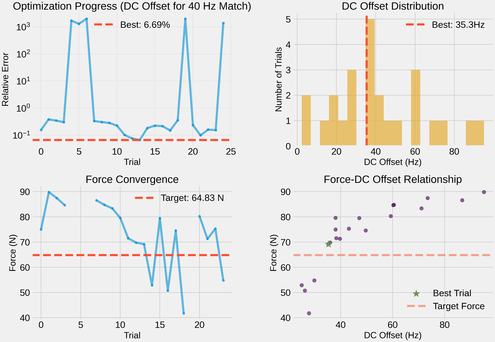

Note
Go to the end to download the full example code.
Optimize Oscillating DC Offset to Match Reference Force#
This example optimizes the DC offset component of an oscillating descending drive to match the reference force produced by constant drive (from script 01). The drive pattern is: DC_offset + 20*sin(2π*20*t).
This finds the equivalent of the original 58 pps value (Phase 3) that produces the same force as constant drive (Phase 1) when combined with 20 Hz oscillation.
Note
Purpose: Find DC offset for Phase 3 that matches Phase 1 force
Reference: Constant drive force from script 01 (configurable, default 40 Hz)
Optimize: DC offset + 20 Hz oscillation to match that force
Result: DC offset < constant drive (oscillation adds activation)
Important
Prerequisites: Run 01_compute_baseline_force.py first
Output: results/watanabe_optimization/dc_offset_optimized.json
MyoGen Components Used:
AlphaMN__Pool: Same motor neuron pool as script 01. Created fresh for each optimization trial to ensure independent network realizations.DescendingDrive__Pool: Poisson spike generators driven by time-varying rate:DC_offset + amplitude*sin(2πft). Theintegrate()method advances the internal Poisson process by one timestep.Network: Rebuilds the network for each trial with same connectivity parameters (30%).ForceModel: Computes steady-state force from spike trains to evaluate objective function.External dependency:
optunafor Bayesian optimization (TPE sampler).
Key Concept: The oscillation itself contributes to motor neuron activation, so the DC offset in Phase 3 must be lower than the constant drive in Phase 1 to produce the same mean force. The original paper found 58 Hz offset vs 65 Hz constant.
Workflow Position: Step 2 of 6
Next Step: Run 03_10pct_mvc_simulation.py to run the full 3-phase simulation.
Import Libraries#
import json
import os
os.environ["MPLBACKEND"] = "Agg"
if "DISPLAY" in os.environ:
del os.environ["DISPLAY"]
import warnings
from pathlib import Path
import joblib
import matplotlib.pyplot as plt
import numpy as np
import optuna
import quantities as pq
from neo import Block, Segment, SpikeTrain
from neuron import h
from myogen import get_random_generator, set_random_seed
from myogen.simulator import RecruitmentThresholds
from myogen.simulator.core.force.force_model import ForceModel
from myogen.simulator.neuron import Network
from myogen.simulator.neuron.populations import AlphaMN__Pool, DescendingDrive__Pool
from myogen.utils.helper import calculate_firing_rate_statistics
from myogen.utils.nmodl import load_nmodl_mechanisms
warnings.filterwarnings("ignore")
plt.style.use("fivethirtyeight")
Configuration#
# Simulation parameters
SIMULATION_TIME_MS = 5000.0 # Shorter simulation for efficient optimization
TIMESTEP_MS = 0.1
N_MOTOR_UNITS = 800 # Watanabe specification
# Force model parameters
RECORDING_FREQUENCY__HZ = 2048
LONGEST_DURATION_RISE_TIME__MS = 90.0
CONTRACTION_TIME_RANGE = 3
# Oscillation parameters (Watanabe specification)
OSC_FREQUENCY__HZ = 20.0 # 20 Hz physiological tremor
OSC_AMPLITUDE__HZ = 20.0 # Amplitude of oscillation
# Optimization settings
N_TRIALS = 25 # Increase for production
TIMEOUT_SECONDS = 3600
# Network parameters (Watanabe specification)
N_DD_NEURONS = 400
DD_CONNECTIVITY = 0.3
SYNAPTIC_WEIGHT = 0.05
# Directories
try:
_script_dir = Path(__file__).parent
except NameError:
_script_dir = Path.cwd()
BASELINE_DIR = _script_dir / "results" / "watanabe_optimization"
RESULTS_DIR = _script_dir / "results" / "watanabe_optimization"
RESULTS_DIR.mkdir(exist_ok=True, parents=True)
Load Reference Force Data#
print("\nLoading Reference Force (Constant Drive)")
print("=" * 50)
reference_file = BASELINE_DIR / "force_reference.json"
if not reference_file.exists():
raise FileNotFoundError(
f"Reference force not found: {reference_file}\nRun 01_compute_baseline_force.py first!"
)
with open(reference_file, "r") as f:
reference_results = json.load(f)
# Extract reference force and scaling
REFERENCE_FORCE__N = reference_results["force"]["mean__N"]
REFERENCE_DRIVE__HZ = reference_results["network_parameters"]["dd_drive__Hz"]
TARGET_FORCE__N = REFERENCE_FORCE__N # Match the reference force
MAX_FORCE_N = reference_results["force_scaling"]["max_force__N"]
print(f"Reference force: {REFERENCE_FORCE__N:.2f} N ({REFERENCE_DRIVE__HZ:.1f} Hz constant)")
print(f"Target force: {TARGET_FORCE__N:.2f} N (match with oscillation)")
print(f"Force scaling: {MAX_FORCE_N:.0f} N maximum")
print(f"Oscillation: {OSC_FREQUENCY__HZ} Hz, amplitude {OSC_AMPLITUDE__HZ} Hz")
print(f"DD neurons: {N_DD_NEURONS}")
print(f"Connection probability: {DD_CONNECTIVITY:.1%}")
print("=" * 50 + "\n")
Loading Reference Force (Constant Drive)
==================================================
Reference force: 64.83 N (40.0 Hz constant)
Target force: 64.83 N (match with oscillation)
Force scaling: 100 N maximum
Oscillation: 20.0 Hz, amplitude 20.0 Hz
DD neurons: 400
Connection probability: 30.0%
==================================================
Initialize NEURON#
set_random_seed(42)
load_nmodl_mechanisms()
h.secondorder = 2
Random seed set to 42.
Define Simulation Function#
def run_simulation_with_oscillating_drive(dc_offset, recruitment_thresholds):
"""
Run network simulation with oscillating drive and compute resulting force.
Drive pattern: dc_offset + OSC_AMPLITUDE * sin(2*pi*OSC_FREQUENCY*t)
Parameters
----------
dc_offset : float
DC offset component of oscillating drive (Hz)
recruitment_thresholds : np.ndarray
Motor unit recruitment thresholds
Returns
-------
tuple
(force_mean, n_active, fr_mean, fr_std)
"""
# Create motor neuron pool
motor_neuron_pool = AlphaMN__Pool(
recruitment_thresholds__array=recruitment_thresholds,
config_file="alpha_mn_default.yaml",
)
# Create descending drive pool (Poisson - Watanabe specification)
descending_drive_pool = DescendingDrive__Pool(
n=N_DD_NEURONS,
timestep__ms=TIMESTEP_MS * pq.ms,
process_type="poisson",
poisson_batch_size=1, # Order 1 Poisson (Watanabe)
)
# Build network
network = Network({"DD": descending_drive_pool, "aMN": motor_neuron_pool})
network.connect(
source="DD",
target="aMN",
probability=DD_CONNECTIVITY,
weight__uS=SYNAPTIC_WEIGHT * pq.uS,
)
network.connect_from_external(source="cortical_input", target="DD", weight__uS=1.0 * pq.uS)
dd_netcons = network.get_netcons("cortical_input", "DD")
# Setup spike recording
mn_spike_recorders = []
for cell in motor_neuron_pool:
spike_recorder = h.Vector()
nc = h.NetCon(cell.soma(0.5)._ref_v, None, sec=cell.soma)
nc.threshold = 50
nc.record(spike_recorder)
mn_spike_recorders.append(spike_recorder)
# Create oscillating drive signal: DC + amplitude * sin(2*pi*freq*t)
time_points = int(SIMULATION_TIME_MS / TIMESTEP_MS)
time_s = np.arange(time_points) * TIMESTEP_MS / 1000.0
# Oscillating component
drive_signal = dc_offset + OSC_AMPLITUDE__HZ * np.sin(2 * np.pi * OSC_FREQUENCY__HZ * time_s)
# Clip to prevent negative firing rates
drive_signal = np.clip(drive_signal, 0, None)
# Add small noise
drive_signal += np.clip(get_random_generator().normal(0, 1.0, size=time_points), 0, None)
# Initialize simulation
h.load_file("stdrun.hoc")
h.dt = TIMESTEP_MS
h.tstop = SIMULATION_TIME_MS
for section, voltage in zip(*motor_neuron_pool.get_initialization_data()):
section.v = voltage
for section, voltage in zip(*descending_drive_pool.get_initialization_data()):
section.v = voltage
h.finitialize()
# Run simulation
step_counter = 0
while h.t < h.tstop:
current_drive = drive_signal[min(step_counter, len(drive_signal) - 1)]
for dd_cell in descending_drive_pool:
if dd_cell.integrate(current_drive):
if h.t < h.tstop:
dd_netcons[dd_cell.pool__ID].event(h.t + 1)
h.fadvance()
step_counter += 1
# Convert to Neo format
dt_s = h.dt / 1000.0
mn_segment = Segment(name="Motor Neurons")
mn_segment.spiketrains = [
SpikeTrain(
recorder.as_numpy() / 1000 * pq.s,
t_stop=SIMULATION_TIME_MS / 1000 * pq.s,
sampling_rate=(1 / dt_s * pq.Hz),
sampling_period=dt_s * pq.s,
name=f"MN_{i}",
)
for i, recorder in enumerate(mn_spike_recorders)
]
spike_train__Block = Block(name="Motor Unit Pool")
spike_train__Block.segments = [mn_segment]
# Calculate statistics
n_active = sum(1 for st in mn_segment.spiketrains if len(st) > 1)
stats = calculate_firing_rate_statistics(mn_segment.spiketrains)
fr_mean = float(stats["FR_mean"])
fr_std = float(stats["FR_std"])
# Generate force
force_model = ForceModel(
recruitment_thresholds=recruitment_thresholds,
recording_frequency__Hz=RECORDING_FREQUENCY__HZ * pq.Hz,
longest_duration_rise_time__ms=LONGEST_DURATION_RISE_TIME__MS * pq.ms,
contraction_time_range_factor=CONTRACTION_TIME_RANGE,
)
force_output = force_model.generate_force(spike_train__Block=spike_train__Block)
force_raw = force_output.magnitude[:, 0] # Arbitrary units (sum of MU twitches)
# Normalize force to 0-1 range, then scale to Newtons
# (ForceModel outputs sum of MU twitch forces, not normalized values)
force_max_raw = np.max(force_raw)
force_signal = (force_raw / force_max_raw) * MAX_FORCE_N # Scale to Newtons
# Calculate steady-state force
steady_idx = len(force_signal) // 2
force_mean = np.mean(force_signal[steady_idx:])
return force_mean, n_active, fr_mean, fr_std
Define Objective Function#
# Generate recruitment thresholds
recruitment_thresholds, _ = RecruitmentThresholds(
N=N_MOTOR_UNITS,
recruitment_range__ratio=100,
deluca__slope=5,
konstantin__max_threshold__ratio=1.0,
mode="combined",
)
def objective(trial):
"""
Optimize DC offset to match reference force with oscillation.
Parameters
----------
trial : optuna.Trial
Optimization trial
Returns
-------
float
Relative force error (minimize)
"""
try:
# Optimize DC offset (will be lower than constant drive)
dc_offset = trial.suggest_float("dc_offset", 1.0, 100.0)
# Run simulation with oscillating drive
force_mean, n_active, fr_mean, fr_std = run_simulation_with_oscillating_drive(
dc_offset, recruitment_thresholds
)
# Check minimum recruitment
if n_active < 10: # At least 1.25% of neurons
return 1000.0 + (10 - n_active) * 100.0
# Calculate relative error
force_error = abs(force_mean - TARGET_FORCE__N) / TARGET_FORCE__N
# Store metadata
trial.set_user_attr("force_achieved", float(force_mean))
trial.set_user_attr("force_error", float(force_error))
trial.set_user_attr("n_active", n_active)
trial.set_user_attr("dc_offset__Hz", float(dc_offset))
trial.set_user_attr("FR_mean", float(fr_mean))
trial.set_user_attr("FR_std", float(fr_std))
if trial.number % 5 == 0:
print(
f"Trial {trial.number}: "
f"Force={force_mean:.2f}N (target={TARGET_FORCE__N:.2f}N), "
f"Error={force_error:.1%}, "
f"DC={dc_offset:.1f}Hz, "
f"Active={n_active}/{N_MOTOR_UNITS}"
)
return force_error
except Exception as e:
print(f"Trial {trial.number} failed: {e}")
return 1000.0
Run Optimization#
print(f"\nOptimizing DC Offset to Match Reference Force (Oscillating Drive)")
print("=" * 50)
print(f"Target force: {TARGET_FORCE__N:.2f} N ({REFERENCE_DRIVE__HZ:.1f} Hz reference)")
print(f"Oscillation: {OSC_FREQUENCY__HZ} Hz (amplitude {OSC_AMPLITUDE__HZ} Hz)")
print(f"Optimizing: DC offset component")
print(f"Trials: {N_TRIALS}\n")
colors = plt.rcParams["axes.prop_cycle"].by_key()["color"]
storage_name = f"sqlite:///{RESULTS_DIR}/optuna_oscillating_dc.db"
study = optuna.create_study(
direction="minimize",
sampler=optuna.samplers.TPESampler(seed=42),
study_name="dc_offset_oscillating_match",
storage=storage_name,
load_if_exists=True,
)
study.optimize(objective, n_trials=N_TRIALS, timeout=TIMEOUT_SECONDS, show_progress_bar=True)
Optimizing DC Offset to Match Reference Force (Oscillating Drive)
==================================================
Target force: 64.83 N (40.0 Hz reference)
Oscillation: 20.0 Hz (amplitude 20.0 Hz)
Optimizing: DC offset component
Trials: 25
0%| | 0/25 [00:00<?, ?it/s]
Pool 1 Twitch trains (Numba): 0%| | 0/800 [00:00<?, ?MU/s]
Pool 1 Twitch trains (Numba): 0%| | 1/800 [00:00<01:45, 7.60MU/s]
Pool 1 Twitch trains (Numba): 100%|██████████| 800/800 [00:00<00:00, 4565.73MU/s]
Trial 0: Force=74.95N (target=64.83N), Error=15.6%, DC=38.1Hz, Active=467/800
[I 2026-06-01 07:37:55,401] Trial 0 finished with value: 0.15603331464884304 and parameters: {'dc_offset': 38.07947176588889}. Best is trial 0 with value: 0.15603331464884304.
0%| | 0/25 [00:42<?, ?it/s]
Best trial: 0. Best value: 0.156033: 0%| | 0/25 [00:42<?, ?it/s]
Best trial: 0. Best value: 0.156033: 4%|▍ | 1/25 [00:42<17:01, 42.58s/it]
Best trial: 0. Best value: 0.156033: 4%|▍ | 1/25 [00:42<17:01, 42.58s/it, 42.58/3600 seconds]
Pool 1 Twitch trains (Numba): 0%| | 0/800 [00:00<?, ?MU/s]
Pool 1 Twitch trains (Numba): 0%| | 1/800 [00:00<01:45, 7.61MU/s]
Pool 1 Twitch trains (Numba): 100%|██████████| 800/800 [00:00<00:00, 3937.63MU/s]
[I 2026-06-01 07:38:41,628] Trial 1 finished with value: 0.38518307211516883 and parameters: {'dc_offset': 95.1207163345817}. Best is trial 0 with value: 0.15603331464884304.
Best trial: 0. Best value: 0.156033: 4%|▍ | 1/25 [01:28<17:01, 42.58s/it, 42.58/3600 seconds]
Best trial: 0. Best value: 0.156033: 4%|▍ | 1/25 [01:28<17:01, 42.58s/it, 42.58/3600 seconds]
Best trial: 0. Best value: 0.156033: 8%|▊ | 2/25 [01:28<17:08, 44.72s/it, 42.58/3600 seconds]
Best trial: 0. Best value: 0.156033: 8%|▊ | 2/25 [01:28<17:08, 44.72s/it, 88.80/3600 seconds]
Pool 1 Twitch trains (Numba): 0%| | 0/800 [00:00<?, ?MU/s]
Pool 1 Twitch trains (Numba): 0%| | 1/800 [00:00<01:47, 7.41MU/s]
Pool 1 Twitch trains (Numba): 100%|██████████| 800/800 [00:00<00:00, 3980.31MU/s]
[I 2026-06-01 07:39:26,217] Trial 2 finished with value: 0.3484770067734119 and parameters: {'dc_offset': 73.46740023932911}. Best is trial 0 with value: 0.15603331464884304.
Best trial: 0. Best value: 0.156033: 8%|▊ | 2/25 [02:13<17:08, 44.72s/it, 88.80/3600 seconds]
Best trial: 0. Best value: 0.156033: 8%|▊ | 2/25 [02:13<17:08, 44.72s/it, 88.80/3600 seconds]
Best trial: 0. Best value: 0.156033: 12%|█▏ | 3/25 [02:13<16:22, 44.66s/it, 88.80/3600 seconds]
Best trial: 0. Best value: 0.156033: 12%|█▏ | 3/25 [02:13<16:22, 44.66s/it, 133.39/3600 seconds]
Pool 1 Twitch trains (Numba): 0%| | 0/800 [00:00<?, ?MU/s]
Pool 1 Twitch trains (Numba): 0%| | 1/800 [00:00<01:46, 7.49MU/s]
Pool 1 Twitch trains (Numba): 100%|██████████| 800/800 [00:00<00:00, 4185.88MU/s]
[I 2026-06-01 07:40:10,807] Trial 3 finished with value: 0.30497287019940317 and parameters: {'dc_offset': 60.26718993550662}. Best is trial 0 with value: 0.15603331464884304.
Best trial: 0. Best value: 0.156033: 12%|█▏ | 3/25 [02:57<16:22, 44.66s/it, 133.39/3600 seconds]
Best trial: 0. Best value: 0.156033: 12%|█▏ | 3/25 [02:57<16:22, 44.66s/it, 133.39/3600 seconds]
Best trial: 0. Best value: 0.156033: 16%|█▌ | 4/25 [02:57<15:37, 44.63s/it, 133.39/3600 seconds]
Best trial: 0. Best value: 0.156033: 16%|█▌ | 4/25 [02:57<15:37, 44.63s/it, 177.98/3600 seconds]
Pool 1 Twitch trains (Numba): 0%| | 0/800 [00:00<?, ?MU/s]
Pool 1 Twitch trains (Numba): 0%| | 1/800 [00:00<01:42, 7.76MU/s]
Pool 1 Twitch trains (Numba): 100%|██████████| 800/800 [00:00<00:00, 5039.94MU/s]
[I 2026-06-01 07:40:52,016] Trial 4 finished with value: 1700.0 and parameters: {'dc_offset': 16.445845403801215}. Best is trial 0 with value: 0.15603331464884304.
Best trial: 0. Best value: 0.156033: 16%|█▌ | 4/25 [03:39<15:37, 44.63s/it, 177.98/3600 seconds]
Best trial: 0. Best value: 0.156033: 16%|█▌ | 4/25 [03:39<15:37, 44.63s/it, 177.98/3600 seconds]
Best trial: 0. Best value: 0.156033: 20%|██ | 5/25 [03:39<14:27, 43.40s/it, 177.98/3600 seconds]
Best trial: 0. Best value: 0.156033: 20%|██ | 5/25 [03:39<14:27, 43.40s/it, 219.19/3600 seconds]
Pool 1 Twitch trains (Numba): 0%| | 0/800 [00:00<?, ?MU/s]
Pool 1 Twitch trains (Numba): 0%| | 1/800 [00:00<01:44, 7.64MU/s]
Pool 1 Twitch trains (Numba): 100%|██████████| 800/800 [00:00<00:00, 4977.42MU/s]
[I 2026-06-01 07:41:32,610] Trial 5 finished with value: 1300.0 and parameters: {'dc_offset': 16.443457513284063}. Best is trial 0 with value: 0.15603331464884304.
Best trial: 0. Best value: 0.156033: 20%|██ | 5/25 [04:19<14:27, 43.40s/it, 219.19/3600 seconds]
Best trial: 0. Best value: 0.156033: 20%|██ | 5/25 [04:19<14:27, 43.40s/it, 219.19/3600 seconds]
Best trial: 0. Best value: 0.156033: 24%|██▍ | 6/25 [04:19<13:26, 42.45s/it, 219.19/3600 seconds]
Best trial: 0. Best value: 0.156033: 24%|██▍ | 6/25 [04:19<13:26, 42.45s/it, 259.79/3600 seconds]
Pool 1 Twitch trains (Numba): 0%| | 0/800 [00:00<?, ?MU/s]
Pool 1 Twitch trains (Numba): 0%| | 1/800 [00:00<01:42, 7.76MU/s]
Pool 1 Twitch trains (Numba): 100%|██████████| 800/800 [00:00<00:00, 5042.60MU/s]
[I 2026-06-01 07:42:12,946] Trial 6 finished with value: 2000.0 and parameters: {'dc_offset': 6.750277604651747}. Best is trial 0 with value: 0.15603331464884304.
Best trial: 0. Best value: 0.156033: 24%|██▍ | 6/25 [05:00<13:26, 42.45s/it, 259.79/3600 seconds]
Best trial: 0. Best value: 0.156033: 24%|██▍ | 6/25 [05:00<13:26, 42.45s/it, 259.79/3600 seconds]
Best trial: 0. Best value: 0.156033: 28%|██▊ | 7/25 [05:00<12:31, 41.76s/it, 259.79/3600 seconds]
Best trial: 0. Best value: 0.156033: 28%|██▊ | 7/25 [05:00<12:31, 41.76s/it, 300.12/3600 seconds]
Pool 1 Twitch trains (Numba): 0%| | 0/800 [00:00<?, ?MU/s]
Pool 1 Twitch trains (Numba): 0%| | 1/800 [00:00<01:45, 7.59MU/s]
Pool 1 Twitch trains (Numba): 100%|██████████| 800/800 [00:00<00:00, 3967.93MU/s]
[I 2026-06-01 07:42:59,153] Trial 7 finished with value: 0.33518816462543416 and parameters: {'dc_offset': 86.75143843171858}. Best is trial 0 with value: 0.15603331464884304.
Best trial: 0. Best value: 0.156033: 28%|██▊ | 7/25 [05:46<12:31, 41.76s/it, 300.12/3600 seconds]
Best trial: 0. Best value: 0.156033: 28%|██▊ | 7/25 [05:46<12:31, 41.76s/it, 300.12/3600 seconds]
Best trial: 0. Best value: 0.156033: 32%|███▏ | 8/25 [05:46<12:13, 43.17s/it, 300.12/3600 seconds]
Best trial: 0. Best value: 0.156033: 32%|███▏ | 8/25 [05:46<12:13, 43.17s/it, 346.33/3600 seconds]
Pool 1 Twitch trains (Numba): 0%| | 0/800 [00:00<?, ?MU/s]
Pool 1 Twitch trains (Numba): 0%| | 1/800 [00:00<01:43, 7.70MU/s]
Pool 1 Twitch trains (Numba): 100%|██████████| 800/800 [00:00<00:00, 4266.13MU/s]
[I 2026-06-01 07:43:43,586] Trial 8 finished with value: 0.3073771708085631 and parameters: {'dc_offset': 60.510386162577674}. Best is trial 0 with value: 0.15603331464884304.
Best trial: 0. Best value: 0.156033: 32%|███▏ | 8/25 [06:30<12:13, 43.17s/it, 346.33/3600 seconds]
Best trial: 0. Best value: 0.156033: 32%|███▏ | 8/25 [06:30<12:13, 43.17s/it, 346.33/3600 seconds]
Best trial: 0. Best value: 0.156033: 36%|███▌ | 9/25 [06:30<11:37, 43.57s/it, 346.33/3600 seconds]
Best trial: 0. Best value: 0.156033: 36%|███▌ | 9/25 [06:30<11:37, 43.57s/it, 390.76/3600 seconds]
Pool 1 Twitch trains (Numba): 0%| | 0/800 [00:00<?, ?MU/s]
Pool 1 Twitch trains (Numba): 0%| | 1/800 [00:00<01:42, 7.81MU/s]
Pool 1 Twitch trains (Numba): 100%|██████████| 800/800 [00:00<00:00, 4169.11MU/s]
[I 2026-06-01 07:44:28,564] Trial 9 finished with value: 0.2855309797691053 and parameters: {'dc_offset': 71.09918520180851}. Best is trial 0 with value: 0.15603331464884304.
Best trial: 0. Best value: 0.156033: 36%|███▌ | 9/25 [07:15<11:37, 43.57s/it, 390.76/3600 seconds]
Best trial: 0. Best value: 0.156033: 36%|███▌ | 9/25 [07:15<11:37, 43.57s/it, 390.76/3600 seconds]
Best trial: 0. Best value: 0.156033: 40%|████ | 10/25 [07:15<11:00, 44.00s/it, 390.76/3600 seconds]
Best trial: 0. Best value: 0.156033: 40%|████ | 10/25 [07:15<11:00, 44.00s/it, 435.74/3600 seconds]
Pool 1 Twitch trains (Numba): 0%| | 0/800 [00:00<?, ?MU/s]
Pool 1 Twitch trains (Numba): 0%| | 1/800 [00:00<05:21, 2.49MU/s]
Pool 1 Twitch trains (Numba): 100%|██████████| 800/800 [00:00<00:00, 1795.76MU/s]
Trial 10: Force=79.57N (target=64.83N), Error=22.7%, DC=38.1Hz, Active=455/800
[I 2026-06-01 07:45:11,539] Trial 10 finished with value: 0.22738602827152812 and parameters: {'dc_offset': 38.07318637690311}. Best is trial 0 with value: 0.15603331464884304.
Best trial: 0. Best value: 0.156033: 40%|████ | 10/25 [07:58<11:00, 44.00s/it, 435.74/3600 seconds]
Best trial: 0. Best value: 0.156033: 40%|████ | 10/25 [07:58<11:00, 44.00s/it, 435.74/3600 seconds]
Best trial: 0. Best value: 0.156033: 44%|████▍ | 11/25 [07:58<10:11, 43.69s/it, 435.74/3600 seconds]
Best trial: 0. Best value: 0.156033: 44%|████▍ | 11/25 [07:58<10:11, 43.69s/it, 478.72/3600 seconds]
Pool 1 Twitch trains (Numba): 0%| | 0/800 [00:00<?, ?MU/s]
Pool 1 Twitch trains (Numba): 0%| | 1/800 [00:00<01:43, 7.69MU/s]
Pool 1 Twitch trains (Numba): 100%|██████████| 800/800 [00:00<00:00, 4617.05MU/s]
[I 2026-06-01 07:45:54,926] Trial 11 finished with value: 0.1031321441074679 and parameters: {'dc_offset': 38.36496804250745}. Best is trial 11 with value: 0.1031321441074679.
Best trial: 0. Best value: 0.156033: 44%|████▍ | 11/25 [08:42<10:11, 43.69s/it, 478.72/3600 seconds]
Best trial: 11. Best value: 0.103132: 44%|████▍ | 11/25 [08:42<10:11, 43.69s/it, 478.72/3600 seconds]
Best trial: 11. Best value: 0.103132: 48%|████▊ | 12/25 [08:42<09:26, 43.60s/it, 478.72/3600 seconds]
Best trial: 11. Best value: 0.103132: 48%|████▊ | 12/25 [08:42<09:26, 43.60s/it, 522.10/3600 seconds]
Pool 1 Twitch trains (Numba): 0%| | 0/800 [00:00<?, ?MU/s]
Pool 1 Twitch trains (Numba): 0%| | 1/800 [00:00<01:46, 7.52MU/s]
Pool 1 Twitch trains (Numba): 100%|██████████| 800/800 [00:00<00:00, 4566.87MU/s]
[I 2026-06-01 07:46:37,803] Trial 12 finished with value: 0.07623987205304412 and parameters: {'dc_offset': 36.00024627510359}. Best is trial 12 with value: 0.07623987205304412.
Best trial: 11. Best value: 0.103132: 48%|████▊ | 12/25 [09:24<09:26, 43.60s/it, 522.10/3600 seconds]
Best trial: 12. Best value: 0.0762399: 48%|████▊ | 12/25 [09:24<09:26, 43.60s/it, 522.10/3600 seconds]
Best trial: 12. Best value: 0.0762399: 52%|█████▏ | 13/25 [09:24<08:40, 43.38s/it, 522.10/3600 seconds]
Best trial: 12. Best value: 0.0762399: 52%|█████▏ | 13/25 [09:24<08:40, 43.38s/it, 564.98/3600 seconds]
Pool 1 Twitch trains (Numba): 0%| | 0/800 [00:00<?, ?MU/s]
Pool 1 Twitch trains (Numba): 0%| | 1/800 [00:00<01:45, 7.57MU/s]
Pool 1 Twitch trains (Numba): 100%|██████████| 800/800 [00:00<00:00, 4616.17MU/s]
[I 2026-06-01 07:47:21,100] Trial 13 finished with value: 0.06690860730638155 and parameters: {'dc_offset': 35.33823824925556}. Best is trial 13 with value: 0.06690860730638155.
Best trial: 12. Best value: 0.0762399: 52%|█████▏ | 13/25 [10:08<08:40, 43.38s/it, 564.98/3600 seconds]
Best trial: 13. Best value: 0.0669086: 52%|█████▏ | 13/25 [10:08<08:40, 43.38s/it, 564.98/3600 seconds]
Best trial: 13. Best value: 0.0669086: 56%|█████▌ | 14/25 [10:08<07:56, 43.35s/it, 564.98/3600 seconds]
Best trial: 13. Best value: 0.0669086: 56%|█████▌ | 14/25 [10:08<07:56, 43.35s/it, 608.28/3600 seconds]
Pool 1 Twitch trains (Numba): 0%| | 0/800 [00:00<?, ?MU/s]
Pool 1 Twitch trains (Numba): 0%| | 1/800 [00:00<05:28, 2.43MU/s]
Pool 1 Twitch trains (Numba): 100%|██████████| 800/800 [00:00<00:00, 1800.88MU/s]
[I 2026-06-01 07:48:03,762] Trial 14 finished with value: 0.18450736439041984 and parameters: {'dc_offset': 25.059606651333088}. Best is trial 13 with value: 0.06690860730638155.
Best trial: 13. Best value: 0.0669086: 56%|█████▌ | 14/25 [10:50<07:56, 43.35s/it, 608.28/3600 seconds]
Best trial: 13. Best value: 0.0669086: 56%|█████▌ | 14/25 [10:50<07:56, 43.35s/it, 608.28/3600 seconds]
Best trial: 13. Best value: 0.0669086: 60%|██████ | 15/25 [10:50<07:11, 43.14s/it, 608.28/3600 seconds]
Best trial: 13. Best value: 0.0669086: 60%|██████ | 15/25 [10:50<07:11, 43.14s/it, 650.94/3600 seconds]
Pool 1 Twitch trains (Numba): 0%| | 0/800 [00:00<?, ?MU/s]
Pool 1 Twitch trains (Numba): 0%| | 1/800 [00:00<01:42, 7.81MU/s]
Pool 1 Twitch trains (Numba): 100%|██████████| 800/800 [00:00<00:00, 4539.58MU/s]
Trial 15: Force=79.47N (target=64.83N), Error=22.6%, DC=47.2Hz, Active=525/800
[I 2026-06-01 07:48:47,183] Trial 15 finished with value: 0.22586320477707283 and parameters: {'dc_offset': 47.18552537675954}. Best is trial 13 with value: 0.06690860730638155.
Best trial: 13. Best value: 0.0669086: 60%|██████ | 15/25 [11:34<07:11, 43.14s/it, 650.94/3600 seconds]
Best trial: 13. Best value: 0.0669086: 60%|██████ | 15/25 [11:34<07:11, 43.14s/it, 650.94/3600 seconds]
Best trial: 13. Best value: 0.0669086: 64%|██████▍ | 16/25 [11:34<06:29, 43.23s/it, 650.94/3600 seconds]
Best trial: 13. Best value: 0.0669086: 64%|██████▍ | 16/25 [11:34<06:29, 43.23s/it, 694.36/3600 seconds]
Pool 1 Twitch trains (Numba): 0%| | 0/800 [00:00<?, ?MU/s]
Pool 1 Twitch trains (Numba): 0%| | 1/800 [00:00<01:42, 7.80MU/s]
Pool 1 Twitch trains (Numba): 100%|██████████| 800/800 [00:00<00:00, 4944.37MU/s]
[I 2026-06-01 07:49:29,377] Trial 16 finished with value: 0.2174008832878993 and parameters: {'dc_offset': 26.28890241775468}. Best is trial 13 with value: 0.06690860730638155.
Best trial: 13. Best value: 0.0669086: 64%|██████▍ | 16/25 [12:16<06:29, 43.23s/it, 694.36/3600 seconds]
Best trial: 13. Best value: 0.0669086: 64%|██████▍ | 16/25 [12:16<06:29, 43.23s/it, 694.36/3600 seconds]
Best trial: 13. Best value: 0.0669086: 68%|██████▊ | 17/25 [12:16<05:43, 42.92s/it, 694.36/3600 seconds]
Best trial: 13. Best value: 0.0669086: 68%|██████▊ | 17/25 [12:16<05:43, 42.92s/it, 736.55/3600 seconds]
Pool 1 Twitch trains (Numba): 0%| | 0/800 [00:00<?, ?MU/s]
Pool 1 Twitch trains (Numba): 0%| | 1/800 [00:00<01:42, 7.83MU/s]
Pool 1 Twitch trains (Numba): 100%|██████████| 800/800 [00:00<00:00, 4492.87MU/s]
[I 2026-06-01 07:50:13,224] Trial 17 finished with value: 0.1503302068854029 and parameters: {'dc_offset': 49.66620821044337}. Best is trial 13 with value: 0.06690860730638155.
Best trial: 13. Best value: 0.0669086: 68%|██████▊ | 17/25 [13:00<05:43, 42.92s/it, 736.55/3600 seconds]
Best trial: 13. Best value: 0.0669086: 68%|██████▊ | 17/25 [13:00<05:43, 42.92s/it, 736.55/3600 seconds]
Best trial: 13. Best value: 0.0669086: 72%|███████▏ | 18/25 [13:00<05:02, 43.20s/it, 736.55/3600 seconds]
Best trial: 13. Best value: 0.0669086: 72%|███████▏ | 18/25 [13:00<05:02, 43.20s/it, 780.40/3600 seconds]
Pool 1 Twitch trains (Numba): 0%| | 0/800 [00:00<?, ?MU/s]
Pool 1 Twitch trains (Numba): 0%| | 1/800 [00:00<05:35, 2.38MU/s]
Pool 1 Twitch trains (Numba): 100%|██████████| 800/800 [00:00<00:00, 1760.60MU/s]
[I 2026-06-01 07:50:55,740] Trial 18 finished with value: 0.3561828816321954 and parameters: {'dc_offset': 27.872349077351792}. Best is trial 13 with value: 0.06690860730638155.
Best trial: 13. Best value: 0.0669086: 72%|███████▏ | 18/25 [13:42<05:02, 43.20s/it, 780.40/3600 seconds]
Best trial: 13. Best value: 0.0669086: 72%|███████▏ | 18/25 [13:42<05:02, 43.20s/it, 780.40/3600 seconds]
Best trial: 13. Best value: 0.0669086: 76%|███████▌ | 19/25 [13:42<04:17, 42.99s/it, 780.40/3600 seconds]
Best trial: 13. Best value: 0.0669086: 76%|███████▌ | 19/25 [13:42<04:17, 42.99s/it, 822.92/3600 seconds]
Pool 1 Twitch trains (Numba): 0%| | 0/800 [00:00<?, ?MU/s]
Pool 1 Twitch trains (Numba): 0%| | 1/800 [00:00<01:41, 7.85MU/s]
Pool 1 Twitch trains (Numba): 100%|██████████| 800/800 [00:00<00:00, 5063.76MU/s]
[I 2026-06-01 07:51:36,043] Trial 19 finished with value: 2000.0 and parameters: {'dc_offset': 2.3044965138706885}. Best is trial 13 with value: 0.06690860730638155.
Best trial: 13. Best value: 0.0669086: 76%|███████▌ | 19/25 [14:23<04:17, 42.99s/it, 822.92/3600 seconds]
Best trial: 13. Best value: 0.0669086: 76%|███████▌ | 19/25 [14:23<04:17, 42.99s/it, 822.92/3600 seconds]
Best trial: 13. Best value: 0.0669086: 80%|████████ | 20/25 [14:23<03:30, 42.18s/it, 822.92/3600 seconds]
Best trial: 13. Best value: 0.0669086: 80%|████████ | 20/25 [14:23<03:30, 42.18s/it, 863.22/3600 seconds]
Pool 1 Twitch trains (Numba): 0%| | 0/800 [00:00<?, ?MU/s]
Pool 1 Twitch trains (Numba): 0%| | 1/800 [00:00<01:42, 7.79MU/s]
Pool 1 Twitch trains (Numba): 100%|██████████| 800/800 [00:00<00:00, 4323.77MU/s]
Trial 20: Force=80.27N (target=64.83N), Error=23.8%, DC=59.3Hz, Active=583/800
[I 2026-06-01 07:52:20,775] Trial 20 finished with value: 0.2381273771562084 and parameters: {'dc_offset': 59.299493077815356}. Best is trial 13 with value: 0.06690860730638155.
Best trial: 13. Best value: 0.0669086: 80%|████████ | 20/25 [15:07<03:30, 42.18s/it, 863.22/3600 seconds]
Best trial: 13. Best value: 0.0669086: 80%|████████ | 20/25 [15:07<03:30, 42.18s/it, 863.22/3600 seconds]
Best trial: 13. Best value: 0.0669086: 84%|████████▍ | 21/25 [15:07<02:51, 42.95s/it, 863.22/3600 seconds]
Best trial: 13. Best value: 0.0669086: 84%|████████▍ | 21/25 [15:07<02:51, 42.95s/it, 907.95/3600 seconds]
Pool 1 Twitch trains (Numba): 0%| | 0/800 [00:00<?, ?MU/s]
Pool 1 Twitch trains (Numba): 0%| | 1/800 [00:00<01:42, 7.81MU/s]
Pool 1 Twitch trains (Numba): 100%|██████████| 800/800 [00:00<00:00, 4636.73MU/s]
[I 2026-06-01 07:53:04,981] Trial 21 finished with value: 0.0996012180902253 and parameters: {'dc_offset': 39.750099530761936}. Best is trial 13 with value: 0.06690860730638155.
Best trial: 13. Best value: 0.0669086: 84%|████████▍ | 21/25 [15:52<02:51, 42.95s/it, 907.95/3600 seconds]
Best trial: 13. Best value: 0.0669086: 84%|████████▍ | 21/25 [15:52<02:51, 42.95s/it, 907.95/3600 seconds]
Best trial: 13. Best value: 0.0669086: 88%|████████▊ | 22/25 [15:52<02:09, 43.33s/it, 907.95/3600 seconds]
Best trial: 13. Best value: 0.0669086: 88%|████████▊ | 22/25 [15:52<02:09, 43.33s/it, 952.16/3600 seconds]
Pool 1 Twitch trains (Numba): 0%| | 0/800 [00:00<?, ?MU/s]
Pool 1 Twitch trains (Numba): 0%| | 1/800 [00:00<05:36, 2.37MU/s]
Pool 1 Twitch trains (Numba): 100%|██████████| 800/800 [00:00<00:00, 1708.65MU/s]
[I 2026-06-01 07:53:49,516] Trial 22 finished with value: 0.16134516492744702 and parameters: {'dc_offset': 43.19634914107002}. Best is trial 13 with value: 0.06690860730638155.
Best trial: 13. Best value: 0.0669086: 88%|████████▊ | 22/25 [16:36<02:09, 43.33s/it, 952.16/3600 seconds]
Best trial: 13. Best value: 0.0669086: 88%|████████▊ | 22/25 [16:36<02:09, 43.33s/it, 952.16/3600 seconds]
Best trial: 13. Best value: 0.0669086: 92%|█████████▏| 23/25 [16:36<01:27, 43.69s/it, 952.16/3600 seconds]
Best trial: 13. Best value: 0.0669086: 92%|█████████▏| 23/25 [16:36<01:27, 43.69s/it, 996.69/3600 seconds]
Pool 1 Twitch trains (Numba): 0%| | 0/800 [00:00<?, ?MU/s]
Pool 1 Twitch trains (Numba): 0%| | 1/800 [00:00<01:42, 7.77MU/s]
Pool 1 Twitch trains (Numba): 100%|██████████| 800/800 [00:00<00:00, 4832.88MU/s]
[I 2026-06-01 07:54:32,500] Trial 23 finished with value: 0.15521034165081057 and parameters: {'dc_offset': 29.931608084696627}. Best is trial 13 with value: 0.06690860730638155.
Best trial: 13. Best value: 0.0669086: 92%|█████████▏| 23/25 [17:19<01:27, 43.69s/it, 996.69/3600 seconds]
Best trial: 13. Best value: 0.0669086: 92%|█████████▏| 23/25 [17:19<01:27, 43.69s/it, 996.69/3600 seconds]
Best trial: 13. Best value: 0.0669086: 96%|█████████▌| 24/25 [17:19<00:43, 43.48s/it, 996.69/3600 seconds]
Best trial: 13. Best value: 0.0669086: 96%|█████████▌| 24/25 [17:19<00:43, 43.48s/it, 1039.68/3600 seconds]
Pool 1 Twitch trains (Numba): 0%| | 0/800 [00:00<?, ?MU/s]
Pool 1 Twitch trains (Numba): 0%| | 1/800 [00:00<01:42, 7.77MU/s]
Pool 1 Twitch trains (Numba): 100%|██████████| 800/800 [00:00<00:00, 5048.45MU/s]
[I 2026-06-01 07:55:14,344] Trial 24 finished with value: 1400.0 and parameters: {'dc_offset': 16.145315375649517}. Best is trial 13 with value: 0.06690860730638155.
Best trial: 13. Best value: 0.0669086: 96%|█████████▌| 24/25 [18:01<00:43, 43.48s/it, 1039.68/3600 seconds]
Best trial: 13. Best value: 0.0669086: 96%|█████████▌| 24/25 [18:01<00:43, 43.48s/it, 1039.68/3600 seconds]
Best trial: 13. Best value: 0.0669086: 100%|██████████| 25/25 [18:01<00:00, 42.99s/it, 1039.68/3600 seconds]
Best trial: 13. Best value: 0.0669086: 100%|██████████| 25/25 [18:01<00:00, 42.99s/it, 1081.52/3600 seconds]
Best trial: 13. Best value: 0.0669086: 100%|██████████| 25/25 [18:01<00:00, 43.26s/it, 1081.52/3600 seconds]
Analyze Results#
best_trial = study.best_trial
print("\nOptimization Complete")
print("=" * 50)
print(f"Best trial: {best_trial.number}")
print(f"Force error: {best_trial.value:.1%}")
print("\nForce Results:")
print(f" Target: {TARGET_FORCE__N:.2f} N ({REFERENCE_DRIVE__HZ:.1f} Hz reference)")
print(f" Achieved: {best_trial.user_attrs['force_achieved']:.2f} N")
print(f" Error: {best_trial.user_attrs['force_error']:.1%}")
print("\nOptimized Parameters:")
print(f" DC offset: {best_trial.user_attrs['dc_offset__Hz']:.2f} Hz")
print(f" Oscillation: {OSC_FREQUENCY__HZ} Hz (amplitude {OSC_AMPLITUDE__HZ} Hz)")
print(f" Active MUs: {best_trial.user_attrs['n_active']}/{N_MOTOR_UNITS}")
print(
f" Firing rate: {best_trial.user_attrs['FR_mean']:.1f}±{best_trial.user_attrs['FR_std']:.1f} Hz"
)
Optimization Complete
==================================================
Best trial: 13
Force error: 6.7%
Force Results:
Target: 64.83 N (40.0 Hz reference)
Achieved: 69.17 N
Error: 6.7%
Optimized Parameters:
DC offset: 35.34 Hz
Oscillation: 20.0 Hz (amplitude 20.0 Hz)
Active MUs: 442/800
Firing rate: 6.8±2.6 Hz
Save Results#
dd_parameters = {
"dd_neurons": N_DD_NEURONS,
"dd_connectivity": DD_CONNECTIVITY,
"synaptic_weight__uS": SYNAPTIC_WEIGHT,
"dc_offset__Hz": best_trial.user_attrs["dc_offset__Hz"],
"process_type": "poisson",
"poisson_batch_size": 1,
}
results = {
"reference_drive__Hz": REFERENCE_DRIVE__HZ,
"reference_force__N": REFERENCE_FORCE__N,
"target_force__N": TARGET_FORCE__N,
"achieved_force__N": best_trial.user_attrs["force_achieved"],
"force_error": best_trial.user_attrs["force_error"],
"force_scaling": {
"max_force__N": MAX_FORCE_N,
},
"oscillation": {
"frequency__Hz": OSC_FREQUENCY__HZ,
"amplitude__Hz": OSC_AMPLITUDE__HZ,
},
"dd_parameters": dd_parameters,
}
json_path = RESULTS_DIR / "dc_offset_optimized.json"
with open(json_path, "w") as f:
json.dump(results, f, indent=2)
joblib.dump(study, RESULTS_DIR / "study_oscillating_dc.pkl")
print(f"\nSaved results: {json_path}")
print(f"\nNext step: Run 03_10pct_mvc_simulation.py to run the full 3-phase simulation")
Saved results: /home/runner/work/MyoGen/MyoGen/examples/03_papers/watanabe/results/watanabe_optimization/dc_offset_optimized.json
Next step: Run 03_10pct_mvc_simulation.py to run the full 3-phase simulation
Visualize Optimization History#
fig = plt.figure(figsize=(14, 10))
gs = fig.add_gridspec(2, 2, hspace=0.3, wspace=0.3)
# Extract trial data
trial_numbers = [t.number for t in study.trials]
force_achieved = [t.user_attrs.get("force_achieved", None) for t in study.trials]
force_errors = [t.value for t in study.trials]
dc_offset_vals = [t.params.get("dc_offset", None) for t in study.trials]
# 1. Optimization progress
ax_error = fig.add_subplot(gs[0, 0])
ax_error.plot(trial_numbers, force_errors, "o-", alpha=0.6, markersize=4, color=colors[0])
ax_error.axhline(
best_trial.value, linestyle="--", color=colors[1], label=f"Best: {best_trial.value:.2%}"
)
ax_error.set_ylabel("Relative Error")
ax_error.set_title(f"Optimization Progress (DC Offset for {REFERENCE_DRIVE__HZ:.0f} Hz Match)")
ax_error.set_yscale("log")
ax_error.grid(True, alpha=0.3)
ax_error.legend(framealpha=1.0, edgecolor="none")
ax_error.set_xlabel("Trial")
# 2. Force convergence
ax_force = fig.add_subplot(gs[1, 0])
ax_force.plot(trial_numbers, force_achieved, "o-", alpha=0.6, markersize=4, color=colors[0])
ax_force.axhline(
TARGET_FORCE__N, linestyle="--", color=colors[1], label=f"Target: {TARGET_FORCE__N:.2f} N"
)
ax_force.set_xlabel("Trial")
ax_force.set_ylabel("Force (N)")
ax_force.set_title("Force Convergence")
ax_force.legend(framealpha=1.0, edgecolor="none")
# 3. DC offset distribution
ax_hist = fig.add_subplot(gs[0, 1])
ax_hist.hist(dc_offset_vals, bins=20, alpha=0.7, color=colors[2])
ax_hist.axvline(
best_trial.params["dc_offset"],
linestyle="--",
color=colors[1],
label=f"Best: {best_trial.params['dc_offset']:.1f}Hz",
)
ax_hist.set_xlabel("DC Offset (Hz)")
ax_hist.set_ylabel("Number of Trials")
ax_hist.set_title("DC Offset Distribution")
ax_hist.legend(framealpha=1.0, edgecolor="none")
# 4. Force vs DC offset relationship
ax_scatter = fig.add_subplot(gs[1, 1])
ax_scatter.scatter(dc_offset_vals, force_achieved, c=force_errors, s=50, alpha=0.6)
ax_scatter.scatter(
best_trial.params["dc_offset"],
best_trial.user_attrs["force_achieved"],
s=200,
marker="*",
color=colors[3],
label="Best Trial",
)
ax_scatter.axhline(
TARGET_FORCE__N, linestyle="--", color=colors[1], alpha=0.5, label="Target Force"
)
ax_scatter.set_xlabel("DC Offset (Hz)")
ax_scatter.set_ylabel("Force (N)")
ax_scatter.set_title("Force-DC Offset Relationship")
ax_scatter.legend(framealpha=1.0, edgecolor="none")
plt.tight_layout()
plt.savefig(
RESULTS_DIR / "optimization_history_dc_offset.png",
dpi=150,
bbox_inches="tight",
)
plt.show()
print("\n[DONE] DC offset optimization complete!")
print(f"Best DC offset: {best_trial.user_attrs['dc_offset__Hz']:.2f} Hz")
print(f"Original Watanabe: 65 Hz constant → 58 Hz + oscillation (ratio: {58 / 65:.3f})")
print(
f"This implementation: {REFERENCE_DRIVE__HZ:.1f} Hz constant → {best_trial.user_attrs['dc_offset__Hz']:.1f} Hz + oscillation (ratio: {best_trial.user_attrs['dc_offset__Hz'] / REFERENCE_DRIVE__HZ:.3f})"
)

[DONE] DC offset optimization complete!
Best DC offset: 35.34 Hz
Original Watanabe: 65 Hz constant → 58 Hz + oscillation (ratio: 0.892)
This implementation: 40.0 Hz constant → 35.3 Hz + oscillation (ratio: 0.883)
Total running time of the script: (18 minutes 3.018 seconds)